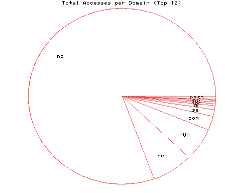
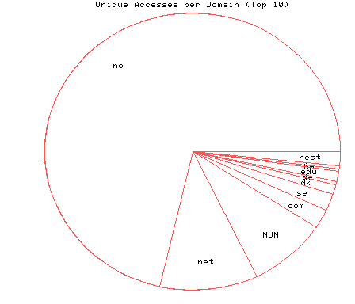

HTTP Server Domain Statistics
Covers: 10/16/95 to 03/11/96 (148 days).
All dates are in local time.
1 level, sorted by number of requests, 16 unique domains.
18226 : 809 : 03/11/96 : Norway (.no) 1620 : 121 : 03/10/96 : Network (.net) 1366 : 98 : 03/10/96 : (numerical domains) 590 : 25 : 03/10/96 : US Commercial (.com) 265 : 22 : 03/10/96 : Sweden (.se) 177 : 13 : 03/10/96 : Denmark (.dk) 81 : 5 : 03/07/96 : Germany (.de) 66 : 13 : 03/10/96 : US Educational (.edu) 65 : 3 : 03/06/96 : Hungary (.hu) 48 : 4 : 01/27/96 : Iceland (.is) 28 : 4 : 03/01/96 : Canada (.ca) 22 : 2 : 03/04/96 : Finland (.fi) 17 : 1 : 03/10/96 : Japan (.jp) 10 : 4 : 02/14/96 : France (.fr) 9 : 2 : 02/27/96 : Netherlands (.nl) 8 : 2 : 03/08/96 : United Kingdom (.uk)

Statistics generated at Mon Mar 11 03:17:01 MET 1996, (C) Schibsted Nett AS, 1995.